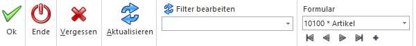
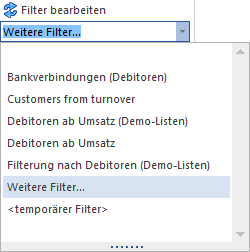

Ø Ok - Tastatur: F5 oder F12
Mit Hilfe dieses Buttons werden neu erfasste Daten oder Änderungen von bestehenden Daten gespeichert oder ein Arbeitsvorgang (Speichern eines Belegs, Verbuchen von Buchungen, etc.) ausgelöst.
Ø Ende - Tastatur: ESC
Schließt das aktuelle Fenster. Alle Eingaben, welche bis zu diesem Zeitpunkt durchgeführt wurden, werden verworfen.
Ø Vergessen / Abbruch / Initialisieren / Eingaben initialisieren- Tastatur: F4
Damit kann eine Eingabe rückgängig gemacht werden, ohne dass das Fenster verlassen werden muss.
Ø Aktualisieren / Anzeigen - Tastatur: Meistens mit der Tastenkombination ALT + A
Mit Hilfe des Buttons (teilweise auf im Fenster selber vorhanden) werden Daten laut der vorgenommenen Selektion aufgelistet.
Ø Filter bearbeiten - Tastatur: Kein Kürzel
Aus der Auswahlliste kann ein bereits angelegter Filter für die Selektion und / oder Sortierung der Auswertung gewählt werden. Durch Anwahl des Buttons Filter bearbeiten kann ein Filter angelegt oder editiert werden. Sollten mehr als 5 Filter angelegt worden sein, so steht der Eintrag "Weitere Filter…" zur Verfügung, worüber sich der Filter Matchcode öffnet.
Beispiel

Ø Formular - Tastatur: Kein Kürzel
Über die Auswahlbox "Formular" kann gewählt werden, in welcher Form Stammdatensätze oder Bewegungsdaten bearbeitet bzw. angezeigt werden sollen. Bei Anwahl der Option "0 - Allgemein" wird die WinLine Standard-Eingabemaske angezeigt
Ø VCR-Buttons / Navigation - Tastatur: Kein Kürzel
Über die so genannten VCR-Buttons, welche in jedem Register zur Verfügung stehen, kann durch Mausklick zwischen den Datensätzen geblättert werden bzw. per +-Button neue Datensätze angelegt werden.